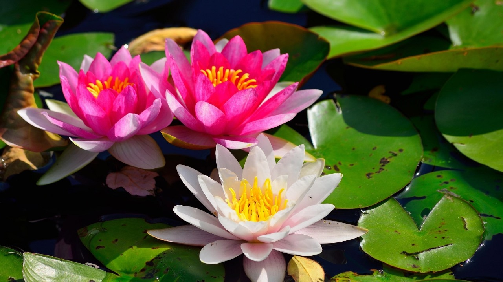
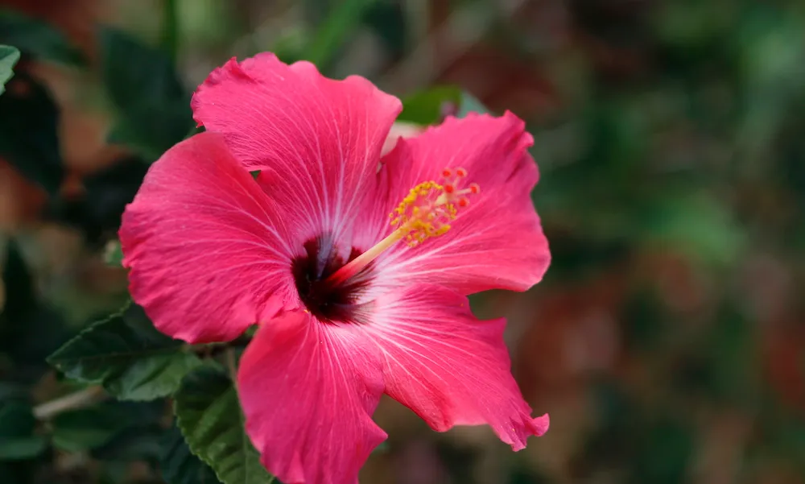
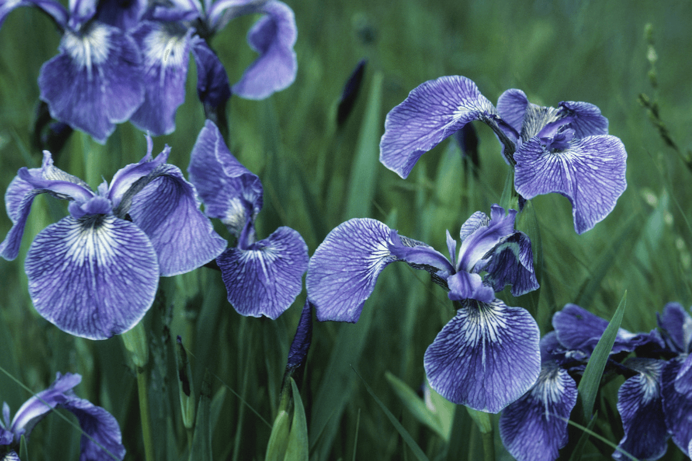
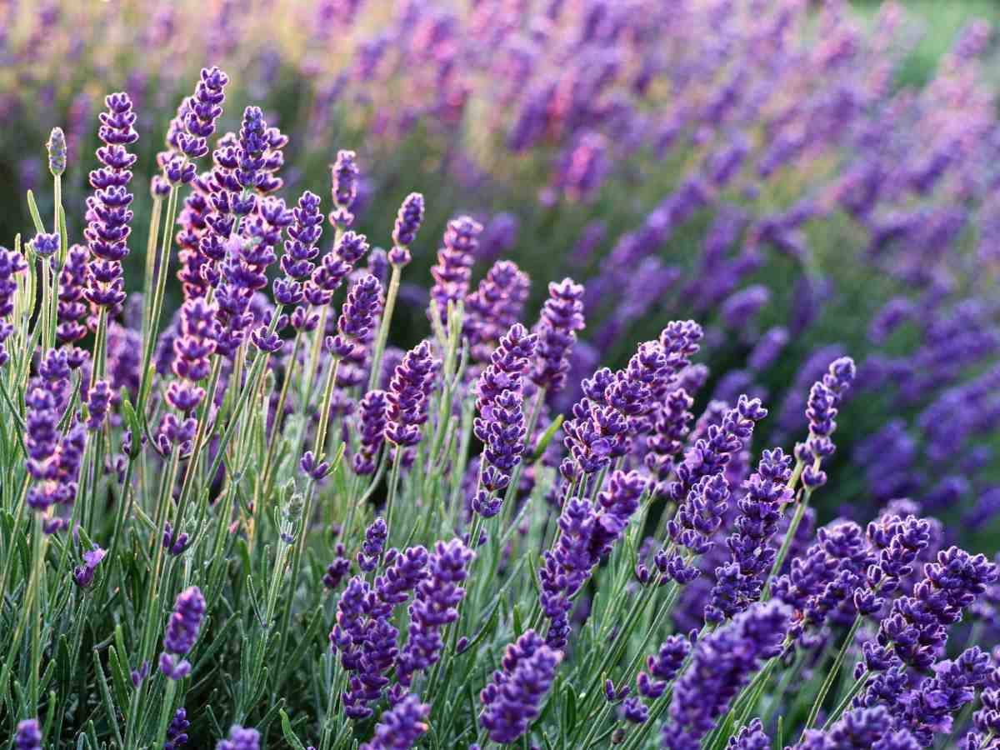

Go Back
Fruits
Flowers
Vegetables
Dashboard
Aglaonema
Everything About Aglaonema
Family/Species:
Araceae
Description:
Aglaonema, commonly known as Chinese evergreen, is a popular ornamental plant prized for its attractive foliage. It is a perennial herbaceous plant native to tropical and subtropical regions of Asia, primarily found in Southeast Asia and Indonesia. Aglaonema plants have broad, lance-shaped leaves with various patterns and colors, including shades of green, silver, gray, and red. The leaves may be solid-colored or variegated with stripes, spots, or marbling. Aglaonema plants are typically grown indoors as houseplants due to their low light and humidity requirements, making them suitable for indoor environments with limited sunlight.
Season of Planting:
Aglaonema plants are typically grown as indoor houseplants year-round and are not typically grown outdoors in gardens. They thrive in warm, humid environments and prefer indirect or filtered sunlight. Aglaonema plants can be propagated from stem cuttings or division of mature plants. They require well-drained potting soil and regular watering to keep the soil evenly moist but not waterlogged. Fertilization with a balanced liquid fertilizer can help promote healthy growth and foliage.
Importance:
Attractive Foliage:
Aglaonema plants are prized for their striking foliage, which comes in various shades of green, silver, red, pink, and cream. The leaves are often marked with patterns or variegation, adding visual interest to indoor spaces.
Low-Light Tolerance:
Aglaonema plants are well-suited for indoor environments with low to moderate light levels. They can thrive in areas where other plants might struggle, making them ideal choices for offices, homes, and other indoor spaces with limited natural light.
Air-Purifying Qualities:
Like many other indoor plants, Aglaonema plants have been found to help improve indoor air quality by filtering out pollutants and toxins. They can remove harmful chemicals such as formaldehyde and benzene from the air, contributing to a healthier indoor environment.
Low Maintenance:
Aglaonema plants are relatively easy to care for and require minimal maintenance. They have moderate water requirements and can tolerate occasional periods of drought. Regular dusting of the leaves and occasional fertilization during the growing season are typically all that's needed to keep them healthy.
Adaptability:
Aglaonema plants are adaptable to different growing conditions and can thrive in various indoor environments. They are relatively pest-resistant and are not prone to many common indoor plant pests.
Versatility:
Aglaonema plants come in a wide range of cultivars with different leaf colors, patterns, and sizes. This variety allows for flexibility in interior decorating, as they can be used as focal points or accents in different settings.
Longevity:
With proper care, Aglaonema plants can live for many years, providing lasting beauty and enjoyment to indoor spaces.
Control Methods
Cultural Control:
Proper cultural practices play a crucial role in managing pests and diseases in Aglaonema flowers. This includes providing adequate light, humidity, and watering to maintain plant health. Regular inspection and removal of dead or diseased plant material can help prevent the spread of pests and diseases. Additionally, avoiding over-fertilization and maintaining proper air circulation around the plants can contribute to their overall resilience.
Biological Control:
Introducing natural predators and beneficial organisms can help control pests in Aglaonema flowers. For example, predatory mites or insects like ladybugs can prey on common pests such as spider mites or aphids. Encouraging biodiversity in the surrounding environment by planting companion plants or maintaining natural habitats can also support beneficial insects and reduce pest populations.
Mechanical Control:
Physical methods such as handpicking pests or removing infected plant parts can be effective in managing pests and diseases in Aglaonema flowers. Using barriers like sticky traps or neem oil-coated strips can help monitor and control pest populations. Regularly cleaning and disinfecting gardening tools and equipment can also prevent the spread of diseases between plants.
Chemical Control:
When necessary, targeted treatments such as insecticides or fungicides may be used to manage specific pests or diseases in Aglaonema flowers. It's essential to choose products that are labeled for indoor ornamental plants and follow the instructions carefully to minimize the risk of harm to the plant and the environment. Integrated Pest Management (IPM) strategies should be employed, combining chemical treatments with other control methods for maximum effectiveness.
Organic Control:
Organic methods for pest and disease management in Aglaonema flowers focus on using natural and organic products to minimize environmental impact while maintaining plant health. This includes using organic fertilizers, such as compost or fish emulsion, to improve soil health and plant resilience. Neem oil, insecticidal soaps, or botanical insecticides derived from plant extracts can be used to control common pests like spider mites or aphids. Cultural practices such as proper watering, pruning, and maintaining plant hygiene are also important components of organic pest and disease management.

Lotus
What To Know About Lotus
Family/Species:
Nelumbonaceae
Description:
Lotus flowers are aquatic perennial plants known for their strikingly beautiful flowers and unique adaptations. They have large, round leaves that float on the surface of water and long stalks that emerge from the water, holding their exquisite flowers above the surface. Lotus flowers have large, showy petals that come in various colors, including white, pink, and yellow, with some varieties featuring bicolor or multicolor blooms. The flowers are typically fragrant and attract pollinators such as bees and butterflies. Lotus plants also produce distinctive seed pods that contain edible seeds.
Season of Care:
Lotus flowers are typically cultivated in aquatic environments such as ponds, lakes, and marshes. They thrive in warm, temperate climates and prefer shallow water with plenty of sunlight. Lotus plants are grown from rhizomes, which are planted in the mud at the bottom of water bodies. They require regular watering and fertilization during the growing season to promote healthy growth and flowering. Lotus flowers bloom during the warmer months, typically from late spring to early fall, depending on the local climate.
Importance:
Cultural and Spiritual Symbolism:
Lotus holds deep cultural and spiritual significance in various traditions, symbolizing purity, enlightenment, and spiritual growth. Revered in Hinduism, Buddhism, and other spiritual practices, the lotus represents divine beauty and transcendence, inspiring individuals on their spiritual journeys.
Medicinal Properties:
Various parts of the lotus plant, including its flowers, seeds, leaves, and rhizomes, have been used in traditional medicine for centuries. Lotus seeds are rich in essential nutrients and antioxidants, supporting overall health and vitality. Lotus rhizomes are used to alleviate digestive issues and promote gastrointestinal health, while lotus petals are used in herbal teas for calming effects and stress relief.
Culinary Versatility:
Lotus seeds, known as "makhana," are a versatile ingredient in Asian cuisine. They can be roasted, fried, or boiled and incorporated into savory and sweet dishes, including curries, soups, and desserts. Lotus rhizomes are prized for their crunchy texture and mild flavor, adding depth to stir-fries, soups, and salads.
Beauty and Skincare Benefits:
Lotus extract and essential oil are used in cosmetics and skincare products for their hydrating, soothing, and antioxidant properties. Lotus extract promotes skin hydration, reduces inflammation, and protects against environmental stressors, maintaining healthy and radiant skin. Lotus essential oil offers calming and stress-relieving effects in aromatherapy, promoting relaxation and overall well-being.
Control Methods
Cultural Control:
Implementing proper cultural practices is vital for managing pests and diseases in Lotus flowers. This includes planting Lotus in suitable locations with adequate sunlight, maintaining clean and well-aerated aquatic environments, and ensuring proper water quality to prevent the spread of diseases. Additionally, regular removal of dead or decaying plant material from ponds or water features can help minimize pest and disease pressure.
Biological Control:
Introducing natural predators and beneficial organisms can help control pests in Lotus flowers. For example, introducing fish species like goldfish or koi into aquatic environments can help control mosquito larvae and other aquatic pests. Additionally, encouraging biodiversity by incorporating beneficial insects or other aquatic organisms like dragonflies or water beetles can help maintain ecological balance and reduce pest populations.
Mechanical Control:
Physical methods such as handpicking pests or manually removing infected plant parts can be effective in managing pests and diseases in Lotus flowers. Regular inspection and cleaning of pond filters, pumps, and other equipment can help prevent the buildup of algae and other pathogens. Installing physical barriers like nets or screens can also help protect Lotus plants from pest infestations.
Chemical Control:
In some cases, targeted treatments such as aquatic herbicides or algaecides may be used to manage specific pest or disease issues in Lotus flowers. It's essential to choose products that are labeled for aquatic use and follow the instructions carefully to avoid harming desirable aquatic organisms. Integrated Pest Management (IPM) strategies should be employed, combining chemical treatments with other control methods for maximum effectiveness while minimizing environmental impact.
Organic Control:
Organic methods for pest and disease management in Lotus flowers focus on using natural and organic products to maintain plant health and ecological balance. This includes using organic fertilizers like compost or fish emulsion to promote healthy growth and resilience. Additionally, biological control agents such as beneficial bacteria or microbial inoculants can help suppress pathogenic organisms and improve water quality. Cultural practices such as proper pond maintenance, including regular cleaning and water changes, are also important components of organic pest and disease management in Lotus cultivation.
Sunflower
What To Know About Sunflower
Family/Species:
Asteraceae / Helianthus.
Description:
Sunflowers are tall, erect annual plants known for their large, bright yellow flower heads and edible seeds. They have rough, hairy stems and large, rough-textured leaves arranged in an alternating pattern along the stem. The flower heads are composed of numerous individual florets arranged in a spiral pattern around a central disk. Sunflower heads can vary in size from small to large, depending on the variety. The seeds are typically harvested from mature flower heads and are commonly eaten roasted or used to produce sunflower oil, which is used in cooking, baking, and as a salad dressing.
Season of Care:
Sunflowers are typically planted in the spring, after the last frost date, when soil temperatures have warmed up to around 50°F (10°C) or higher. They require full sun and well-drained soil to thrive. Sunflowers are relatively easy to grow and are tolerant of a wide range of soil types, although they prefer sandy or loamy soil with good drainage. Depending on the variety, sunflowers can mature and be ready for harvest within 70 to 100 days after planting. They are often grown as ornamental plants in gardens and landscapes for their cheerful, vibrant flowers as well as for their seeds.
Importance:
Nutritional Powerhouse:
Sunflower seeds are a nutrient-rich snack packed with essential vitamins, minerals, and healthy fats. They are particularly high in vitamin E, which acts as a powerful antioxidant, protecting cells from damage caused by free radicals. Additionally, sunflower seeds are rich in protein, fiber, and beneficial plant compounds, making them a nutritious addition to any diet.
Heart Health:
Sunflower oil, derived from sunflower seeds, is known for its heart-healthy properties. It is high in unsaturated fats, including monounsaturated and polyunsaturated fats, which can help lower LDL cholesterol levels and reduce the risk of heart disease when consumed as part of a balanced diet. The vitamin E content in sunflower oil also contributes to cardiovascular health by reducing inflammation and improving blood vessel function.
Skin and Hair Care:
Sunflower oil is a common ingredient in skincare and hair care products due to its moisturizing and nourishing properties. It is rich in vitamin E and other antioxidants, which help protect the skin from damage caused by environmental stressors and promote a youthful appearance. Sunflower oil is easily absorbed by the skin and can help maintain moisture balance, making it suitable for all skin types. Additionally, the vitamin E content in sunflower oil can help strengthen and condition the hair, reducing dryness and promoting healthy growth.
Mood Booster:
Sunflower seeds are a natural source of tryptophan, an amino acid that the body converts into serotonin, a neurotransmitter that regulates mood and promotes feelings of happiness and well-being. Incorporating sunflower seeds into your diet can help support mental health and improve mood, making them a convenient and delicious snack for boosting overall happiness and satisfaction.
Antioxidant Protection:
Sunflower seeds are rich in antioxidants, including vitamin E, selenium, and phenolic compounds, which help protect cells from oxidative damage caused by free radicals. Antioxidants play a crucial role in reducing the risk of chronic diseases, such as cancer and heart disease, by neutralizing harmful free radicals and preventing cellular damage. Including sunflower seeds in your diet can help boost antioxidant intake and support overall health and well-being.
Control Methods
Cultural Control:
Implementing proper cultural practices is essential for managing pests and diseases in sunflowers. This includes selecting appropriate planting locations with well-drained soil, rotating crops to reduce disease pressure, and providing adequate spacing between plants to promote airflow and reduce the risk of fungal diseases. Additionally, practicing good weed management and removing crop debris after harvest can help prevent pest and disease buildup.
Biological Control:
Introducing natural predators and beneficial organisms can help control pests in sunflower fields. For example, releasing predatory insects like ladybugs or lacewings can help reduce populations of aphids and other pests. Additionally, planting companion plants that attract beneficial insects or installing birdhouses to attract insect-eating birds can help keep pest populations in check.
Mechanical Control:
Physical methods such as handpicking pests like caterpillars or removing infected plant parts can be effective in managing pests and diseases in sunflowers. Installing physical barriers like row covers or netting can protect sunflower plants from pest infestations. Regularly scouting fields and removing weeds can also help reduce pest pressure.
Chemical Control:
When necessary, targeted treatments such as insecticides or fungicides may be used to manage specific pests or diseases in sunflowers. It's important to choose products that are labeled for use on sunflowers and follow the instructions carefully to minimize the risk of harm to beneficial insects and the environment. Integrated Pest Management (IPM) strategies should be employed, combining chemical treatments with other control methods for maximum effectiveness.
Organic Control:
Organic methods for pest and disease management in sunflowers focus on using natural and organic products to maintain plant health while minimizing environmental impact. This includes using organic fertilizers like compost or manure to improve soil fertility, employing biological control agents such as beneficial nematodes or microbial inoculants to suppress pest populations, and practicing crop rotation and intercropping with pest-repellent plants to reduce pest pressure. Additionally, cultural practices such as proper irrigation management and maintaining soil health through cover cropping can help enhance plant resilience against pests and diseases in organic sunflower production.

Hibiscus
What To Know About Hibiscus
Family:
Malvaceae
Description:
Hibiscus plants are flowering shrubs or small trees known for their showy, trumpet-shaped flowers. The flowers can vary in size, color, and appearance depending on the species and variety. Common features of hibiscus flowers include five overlapping petals, a prominent central staminal column with numerous stamens, and a stigma protruding from the center. Hibiscus flowers come in a wide range of colors, including red, pink, yellow, orange, white, and purple. The leaves of hibiscus plants are typically green and may be serrated or lobed, depending on the species. Some hibiscus species, such as Hibiscus sabdariffa, are also cultivated for their edible calyces, which are used to make teas, juices, jams, and other culinary products.
Season of Care:
The ideal season for planting hibiscus depends on the species and local climate conditions. In temperate regions, hibiscus plants are typically planted in the spring after the danger of frost has passed. They prefer warm, tropical or subtropical climates and require full sun to partial shade and well-drained soil to thrive. Hibiscus plants are relatively low-maintenance and can tolerate a wide range of soil types, although they prefer slightly acidic soil with good organic content. They require regular watering and fertilization during the growing season to promote healthy growth and flowering.
Importance:
Rich in Antioxidants:
Hibiscus flowers are loaded with antioxidants such as flavonoids, phenolic compounds, and anthocyanins. These antioxidants help neutralize harmful free radicals in the body, reducing oxidative stress and lowering the risk of chronic diseases like heart disease and cancer. Consuming hibiscus tea or incorporating hibiscus into your diet can provide a potent dose of antioxidants to support overall health and well-being.
Heart Health:
Hibiscus has been shown to have beneficial effects on heart health, including lowering blood pressure and cholesterol levels. Studies have found that drinking hibiscus tea regularly may help lower systolic and diastolic blood pressure, making it a natural remedy for hypertension. Additionally, hibiscus can help lower LDL cholesterol levels and increase HDL cholesterol levels, reducing the risk of heart disease and improving cardiovascular health.
Digestive Health:
Hibiscus contains compounds known as mucilage and pectin, which have natural laxative properties and can help promote healthy digestion. Drinking hibiscus tea or consuming hibiscus-infused foods can help relieve constipation and support regular bowel movements. Additionally, hibiscus has anti-inflammatory properties that can soothe the digestive tract and alleviate symptoms of gastrointestinal disorders like indigestion and acid reflux.
Immune Support:
Hibiscus is rich in vitamin C, an essential nutrient that plays a key role in supporting the immune system. Vitamin C helps stimulate the production of white blood cells, which are responsible for fighting off infections and diseases. Consuming hibiscus tea or incorporating hibiscus into your diet can help boost your immune system and protect against common illnesses like colds and flu.
Skin and Hair Benefits:
Hibiscus is a popular ingredient in skincare and hair care products due to its moisturizing, anti-aging, and hair-strengthening properties. Hibiscus contains natural alpha hydroxy acids (AHAs) that exfoliate the skin, promoting cell turnover and revealing smoother, younger-looking skin. Additionally, hibiscus is rich in vitamins and minerals that nourish the hair follicles, strengthen the hair shaft, and promote healthy hair growth. Using hibiscus-infused products or applying hibiscus extracts topically can help improve the overall health and appearance of your skin and hair.
Control Methods
Cultural Control:
Proper cultural practices are essential for managing pests and diseases in Hibiscus plants. This includes planting in well-drained soil with adequate sunlight and spacing to promote airflow, avoiding overwatering to prevent root rot and fungal diseases, and regularly removing fallen leaves and debris to reduce pest habitat. Additionally, maintaining overall plant health through proper fertilization and pruning can improve resistance to pests and diseases.
Biological Control:
Introducing natural predators and beneficial organisms can help control pests in Hibiscus plants. For example, releasing predatory insects like ladybugs or lacewings can help reduce populations of aphids, whiteflies, and other pests. Additionally, encouraging biodiversity in the garden by planting flowers that attract beneficial insects or maintaining bird habitats can help keep pest populations in check.
Mechanical Control:
Physical methods such as handpicking pests like caterpillars or removing infected plant parts can be effective in managing pests and diseases in Hibiscus plants. Installing physical barriers like row covers or netting can protect plants from pest infestations. Regularly inspecting plants for signs of pests or diseases and promptly removing affected parts can help prevent further spread.
Chemical Control:
When necessary, targeted treatments such as insecticides or fungicides may be used to manage specific pests or diseases in Hibiscus plants. It's important to choose products labeled for use on ornamental plants, follow the instructions carefully, and apply chemicals judiciously to minimize environmental impact. Integrated Pest Management (IPM) strategies should be employed, combining chemical treatments with other control methods for maximum effectiveness.
Organic Control:
Organic methods for pest and disease management in Hibiscus plants focus on using natural and organic products to maintain plant health while minimizing environmental impact. This includes using organic fertilizers like compost or compost tea to improve soil fertility, employing biological control agents such as beneficial nematodes or microbial insecticides to suppress pest populations, and practicing cultural techniques like mulching and companion planting to deter pests. Additionally, promoting overall garden health through organic gardening practices can enhance plant resilience against pests and diseases in organic Hibiscus cultivation.

Iris
What To Know About Iris
Family:
Iridaceae
Description:
Irises are herbaceous perennial plants known for their striking, showy flowers and sword-like leaves. The flowers of irises are characterized by three upright petals called standards, and three drooping petals called falls. The petals may be of various colors, including shades of blue, purple, yellow, white, and combinations thereof. Irises typically have a prominent central ridge or beard on the falls, which may be a contrasting color or pattern. The leaves of irises are long, narrow, and stiff, growing in a fan-like arrangement from the base of the plant. Irises are popular ornamental plants in gardens and landscapes, prized for their elegant flowers and architectural foliage.
Season of Care:
The ideal season for planting irises depends on the species and local climate conditions. Bearded irises, one of the most common types of irises, are typically planted in the late summer or early fall, allowing them to establish roots before the winter. They prefer well-drained soil and full sun to partial shade. Irises are relatively low-maintenance plants once established and can thrive in a wide range of soil types and growing conditions. They require regular watering during the growing season but are drought-tolerant once established. Irises can be propagated through division of rhizomes or by planting seeds.
Importance:
Medicinal Uses:
Various parts of the iris plant, including the rhizomes and roots, have been used in traditional medicine for their medicinal properties. Iris has been utilized in herbal remedies for its anti-inflammatory, analgesic, and diuretic properties. It has been used to treat conditions such as rheumatism, urinary tract infections, and digestive issues.
Aromatic Qualities:
Some species of iris, such as Iris germanica (bearded iris), produce fragrant flowers with a pleasant scent. The aromatic qualities of iris make it a popular choice for perfumery and aromatherapy. Iris essential oil, derived from the rhizomes of certain iris species, is used in perfumes, cosmetics, and aromatherapy blends for its sweet, earthy aroma.
Symbolic Meanings:
Iris flowers are rich in symbolism and hold various meanings in different cultures. In Greek mythology, Iris was the messenger of the gods and the personification of the rainbow. The iris flower is often associated with messages, communication, and hope. In addition, different iris colors carry symbolic meanings, with purple irises symbolizing wisdom and royalty, white irises symbolizing purity and innocence, and blue irises symbolizing faith and hope.
Drought Tolerance:
D Many iris species are well-adapted to dry conditions and have evolved mechanisms to withstand drought. Their rhizomatous or bulbous root systems allow them to store water during periods of drought, making them resilient and low-maintenance garden plants. This drought tolerance makes iris an excellent choice for xeriscaping and water-wise landscaping projects.
Pollinator Attraction:
Iris flowers are attractive to pollinators such as bees, butterflies, and hummingbirds. The vibrant colors and unique flower structure of iris make them highly appealing to pollinating insects and birds, which help facilitate pollination and promote biodiversity in the garden. By planting iris in your garden, you can attract and support pollinators, contributing to the health of local ecosystems.
Control Methods
Cultural Control:
Implementing proper cultural practices is essential for managing pests and diseases in irises. This includes selecting healthy rhizomes from reputable sources, planting them in well-drained soil with adequate sunlight and spacing to promote airflow, and avoiding overwatering to prevent waterlogged conditions that can lead to fungal diseases. Regularly removing weeds, debris, and dead plant material from around irises can help reduce pest habitats and minimize disease spread.
Biological Control:
Introducing natural predators and beneficial organisms can help control pests in irises. For example, releasing predatory insects like ladybugs, lacewings, or beneficial nematodes can help reduce populations of aphids, thrips, and other pests. Encouraging biodiversity by planting flowers that attract beneficial insects or maintaining bird habitats can also help keep pest populations in check.
Mechanical Control:
Physical methods such as handpicking pests like aphids or removing infected plant parts can be effective in managing pests and diseases in irises. Installing physical barriers like row covers or netting can protect plants from pest infestations. Regularly inspecting plants for signs of pests or diseases and promptly removing affected parts can help prevent further spread.
Chemical Control:
When necessary, targeted treatments such as insecticides or fungicides may be used to manage specific pests or diseases in irises. It's important to choose products labeled for use on ornamental plants, follow the instructions carefully, and apply chemicals judiciously to minimize environmental impact. Integrated Pest Management (IPM) strategies should be employed, combining chemical treatments with other control methods for maximum effectiveness.
Organic Control:
Organic methods for pest and disease management in irises focus on using natural and organic products to maintain plant health while minimizing environmental impact. This includes using organic fertilizers like compost or compost tea to improve soil fertility, employing biological control agents such as beneficial nematodes or microbial insecticides to suppress pest populations, and practicing cultural techniques like mulching and companion planting to deter pests. Additionally, promoting overall garden health through organic gardening practices can enhance plant resilience against pests and diseases in organic Iris cultivation.

Lavender
What To Know About Lavender
Family/Species:
Lamiaceae / Lavandula.
Description:
Lavender is a fragrant, perennial herb known for its aromatic foliage and colorful, fragrant flowers. It has narrow, linear leaves that are gray-green in color and covered in fine hairs. Lavender flowers grow on long spikes and are made up of multiple small, tubular flowers arranged in whorls. The flowers come in various shades of purple, blue, pink, and white, depending on the variety. Lavender is prized for its soothing fragrance and is commonly used in aromatherapy, herbal medicine, culinary applications, and as an ornamental plant in gardens and landscapes.
Season of Planting:
The ideal season for planting lavender depends on the local climate and growing conditions. Lavender is typically planted in the spring or fall when the soil is warm and well-drained. It prefers full sun and well-drained, alkaline soil with good air circulation. Lavender plants are drought-tolerant once established and require minimal watering. They are relatively low-maintenance plants and benefit from regular pruning to promote bushy growth and prolific flowering. Lavender can be propagated from seeds, cuttings, or divisions of mature plants.
Importance:
Relaxation and Stress Relief:
Lavender is renowned for its calming and relaxing properties, making it a popular choice for aromatherapy and relaxation techniques. The aroma of lavender has been shown to reduce stress, anxiety, and promote relaxation by interacting with the central nervous system. Inhaling lavender essential oil or using lavender-scented products can help alleviate tension and promote a sense of calm and well-being.
Improved Sleep Quality:
Lavender has been used for centuries as a natural remedy for insomnia and sleep disturbances. Research suggests that the aroma of lavender can improve sleep quality by promoting relaxation and reducing stress levels. Lavender essential oil or sachets placed under the pillow can help induce a restful night's sleep and alleviate insomnia symptoms.
Skin and Hair Care:
Lavender is prized for its skincare and hair care benefits due to its anti-inflammatory, antiseptic, and healing properties. Lavender essential oil is commonly used in skincare products to soothe irritated skin, alleviate acne, and promote wound healing. It is also beneficial for scalp health, as it can help reduce dandruff, soothe scalp irritation, and promote hair growth.
Pain Relief:
Lavender has analgesic properties that make it effective for relieving various types of pain, including headaches, muscle aches, and joint pain. Applying lavender essential oil topically or using lavender-infused products can help reduce pain and inflammation, providing natural relief from discomfort.
Insect Repellent:
Lavender contains compounds that act as natural insect repellents, making it an effective and safer alternative to chemical insecticides. Planting lavender in your garden or using lavender essential oil can help repel mosquitoes, flies, moths, and other insects, protecting you and your plants from insect damage.
Control Methods
Cultural Control:
Proper cultural practices are essential for managing pests and diseases in lavender plants. This includes planting lavender in well-drained soil with good airflow and sunlight exposure, avoiding overwatering to prevent root rot and fungal diseases, and spacing plants appropriately to minimize crowding. Pruning lavender regularly to improve air circulation and removing dead or diseased plant material can also help prevent pest infestations and disease spread.
Biological Control:
Introducing natural predators and beneficial organisms can help control pests in lavender. For example, releasing predatory insects like ladybugs or lacewings can help reduce populations of aphids, thrips, and other pests. Encouraging biodiversity by planting flowers that attract beneficial insects or maintaining habitats for natural enemies can also help keep pest populations in check.
Mechanical Control:
Physical methods such as handpicking pests like aphids or removing infected plant parts can be effective in managing pests and diseases in lavender. Installing physical barriers like row covers or netting can protect plants from pest infestations. Regularly inspecting plants for signs of pests or diseases and promptly removing affected parts can help prevent further spread.
Chemical Control:
When necessary, targeted treatments such as insecticides or fungicides may be used to manage specific pests or diseases in lavender. It's important to choose products labeled for use on ornamental plants, follow the instructions carefully, and apply chemicals judiciously to minimize environmental impact. Integrated Pest Management (IPM) strategies should be employed, combining chemical treatments with other control methods for maximum effectiveness.
Organic Control:
Organic methods for pest and disease management in lavender focus on using natural and organic products to maintain plant health while minimizing environmental impact. This includes using organic fertilizers like compost or compost tea to improve soil fertility, employing biological control agents such as beneficial nematodes or microbial insecticides to suppress pest populations, and practicing cultural techniques like mulching and companion planting to deter pests. Additionally, promoting overall garden health through organic gardening practices can enhance plant resilience against pests and diseases in organic lavender cultivation.